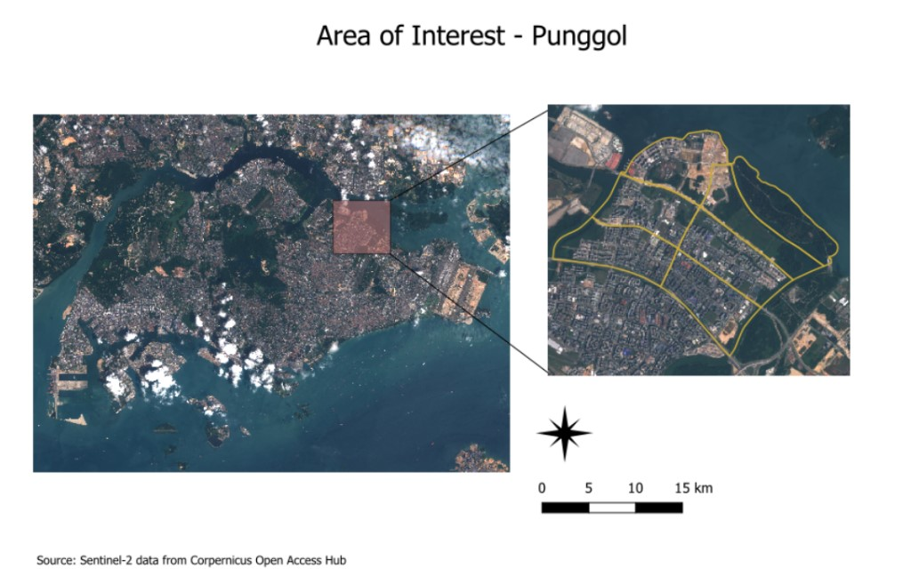
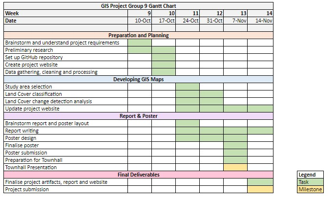

Land Cover Change Detection of Punggol from 2016 to 2020
Introduction
Over the past few decades, Singapore has witnessed the rapid progression of urbanization due to rising demand for public housing. In 2020, the demand for Build-To-Order (BTO) flats jumped by 70% as compared to previous years due to many of the younger generation’s desire to start a family (Sun, 2021). In response to this, HDB will be increasing their supply of new flats over the next few years to meet the high housing demand (HDB, 2021). Now that more land will be reserved for residential purposes, the loss of biodiversity and pressures on ecosystem services are becoming more pertinent especially with increasing land cover change due to changing land uses.
Land use and land cover change detection are an important source of information for decision making. Land cover shows areas that are covered by forests, wetland, impervious surfaces, agriculture and other land and water types. Land cover change can be determined by analyzing satellite imagery and is crucial in making informed policy, development and planning decisions. In contrast, land use refers to how people utililse the land for various purposes like recreation, development and more (Natural Resources Canada, 2015).
In this project, we utilised remote sensing data, satellite imagery and image processing techniques to study the change in land cover detection of our selected area of interest, Punggol for years 2016 and 2020.
Motivation
With Punggol New Town as Singapore’s first ecotown established in 2010, we are interested in how ‘eco’ or sustainable it has been especially after Waterway has gained more traction among locals since its opening in 2016.
Furthermore, we are interested in how recent urban developments to meet residential demands have changed the town's land uses. In specificity, Northshore District's smart and sustainable precincts have been recently spearheaded by URA and HDB through smart planning ever since their first success in promoting sustainable green living through Treelodge@Punggol (Eastern Loop) (HDB, n.d.).
With Punggol being the up-and-coming estate in Singapore, there are many future development plans that may impact the land cover use in that area. An example is the Punggol Digital District scheduled to open in 2023, which is known as the "smart-district" that brings together industry and academia through collaboration of work spaces and facilities (URA,n.d.). Another promising development is the Punggol Coast MRT which will bring more convenience to the residents of Punggol, reducing the travel time between Punggol and Pasir Ris from 45 minutes to just 20 minutes (Hao, 2021). These commercial and transportation infrastructure may result in alterations in land cover use so that more space is available for such developments.
As such, it would be interesting to dive deeper to analyse the changes in land cover to meet the increasing demand and the impact it has on Punggol as Singapore's first eco-town.
Source: Stacked Homes
Objectives
Based on the above, our project 3 main objectives are as follows:
Perform Multi-spectral classification techniques on satellite images
Visualise and analyse changes in vegetation cover in Punggol from 2016 and 2020
Identify impact of land cover change on Punggol and provide recommendations moving forward
Data
For the purpose of this project, Sentinel-2 Satellite Data will be used. The data is taken from Copernicus Open Access Hub and can be downloaded via this link
The following are the IDs of the satellite data for 2016 and 2020:
S2A_MSIL1C_20160923T031532_N0204_R118_T48NUG_20160923T033246
S2A_MSIL1C_20200126T032011_N0208_R118_T48NUG_20200126T061348
Using 2020 as an example, the following datasets should be imported into QGIS for the analysis.
T48NUG_20200126T032011_B01.jp2
T48NUG_20200126T032011_B02.jp2
T48NUG_20200126T032011_B03.jp2
T48NUG_20200126T032011_B04.jp2
T48NUG_20200126T032011_B05.jp2
T48NUG_20200126T032011_B06.jp2
T48NUG_20200126T032011_B07.jp2
T48NUG_20200126T032011_B08.jp2
T48NUG_20200126T032011_B8A.jp2
T48NUG_20200126T032011_B09.jp2
T48NUG_20200126T032011_B10.jp2
T48NUG_20200126T032011_B11.jp2
T48NUG_20200126T032011_B12.jp2
T48NUG_20200126T032011_TCI.jp2
*The datasets are located in the IMG_DATA folder and only data with the JP2 File type is used
The rationale behind choosing Sentinel-2 over Landsat-8 is because Sentinel-2 provides high resolution optical imaging for land services at a 10m resolution, which can potentially yield better accuracy. However, Sentinel-2 data is only available from June 2015 onwards, which means it is unable to detect earlier change prior to June 2015. Hence, 2016 and 2020 satellite images will be used in our analysis.
The Sentinel-2 satellites each carry a single multi-spectral instrument (MSI) with 13 spectral channels in the visible/near infrared (VNIR) and short wave infrared spectral range (SWIR).
The table below provides more details about the 13 spectral bands.

Source: Satellite Imaging Corporation
Using satellite imagery allows us to study Land Cover change because the images cover large geographical areas and have high temporal coverage. The different sensors with images of varying resolutions can help to detect specific land types.
While it is an effective tool to study Land Use and Land Cover Change, many sensors are unable to obtain data and information through cloud cover. Hence, it is important to choose a selected area that is free of cloud cover, otherwise a cloud mask has to be used.
Project Study Area

The selected area of interest is Punggol which is located in the northeastern region of Singapore. The reason for choosing Punggol is because it is one of the few areas that were free of cloud cover. It is strongly recommended to select areas free of cloud as cloud cover would make extracting information more difficult, and a cloud mask would have to be used for cloud removal. Punggol has undergone rapid development and changes over the years, and with many future developments such as the Punggol Digital District and residential developments coming up, it would be interesting to find out the changes in land cover and use to meet rising residential demands.
Scope of Work
This project will be mainly focusing on Land Cover change detection using remote sensing techniques. We will be utilising publicly available satellite data such as Sentinel-2 data as well as literature reviews for the analysis of the project. The scope of the project will cover the process of area selection and data collection, data preparation, generating training and testing data, performing Multi-spectral Classification, and finally performing land cover change detection and analyzing the results. For the Multi-spectral Classification of satellite imagery, Supervised Classification technique using the Semi-automatic classification Plugin (SCP) will be used.
Project Schedule
The project schedule is detailed in the Gantt Chart below.

References
Hao, Z. (2021, January 15). 4 future developments that will increase punggol property prices. https://serviceback.com/blog/article/4-future-developments-that-will-increase-punggol-property-prices
HDB. (n.d.). Retrieved November 9, 2022, from https://www.hdb.gov.sg/about-us/our-role/smart-and-sustainable-living/punggol-ecotown/treelodgepunggol
HDB. (2021, December 16). HDB to Ramp Up Flat Supply by 35% Over Next Two Years. https://www.hdb.gov.sg/about-us/news-and-publications/press-releases/16122021-HDB-to-Ramp-Up-Flat-Supply-by-35-Percent-Over-Next-Two-Years
Natural Resources Canada. (2015, February 4). Land cover & land use. https://www.nrcan.gc.ca/maps-tools-and-publications/satellite-imagery-and-air-photos/tutorial-fundamentals-remote-sensing/educational-resources-applications/land-cover-biomass-mapping/land-cover-land-use/9373
Sun, D. (2021, November 21). Demand for BTO HDB flats jumped 70% in 2020, with 87,800 applications. The Straits Times. https://www.straitstimes.com/singapore/housing/demand-for-build-to-order-hdb-flats-jumped-in-2020-with-87800-applications
URA. (n.d.). Retrieved November 9, 2022, from https://www.ura.gov.sg/Corporate/Planning/Master-Plan/Urban-Transformations/Punggol-Digital-District